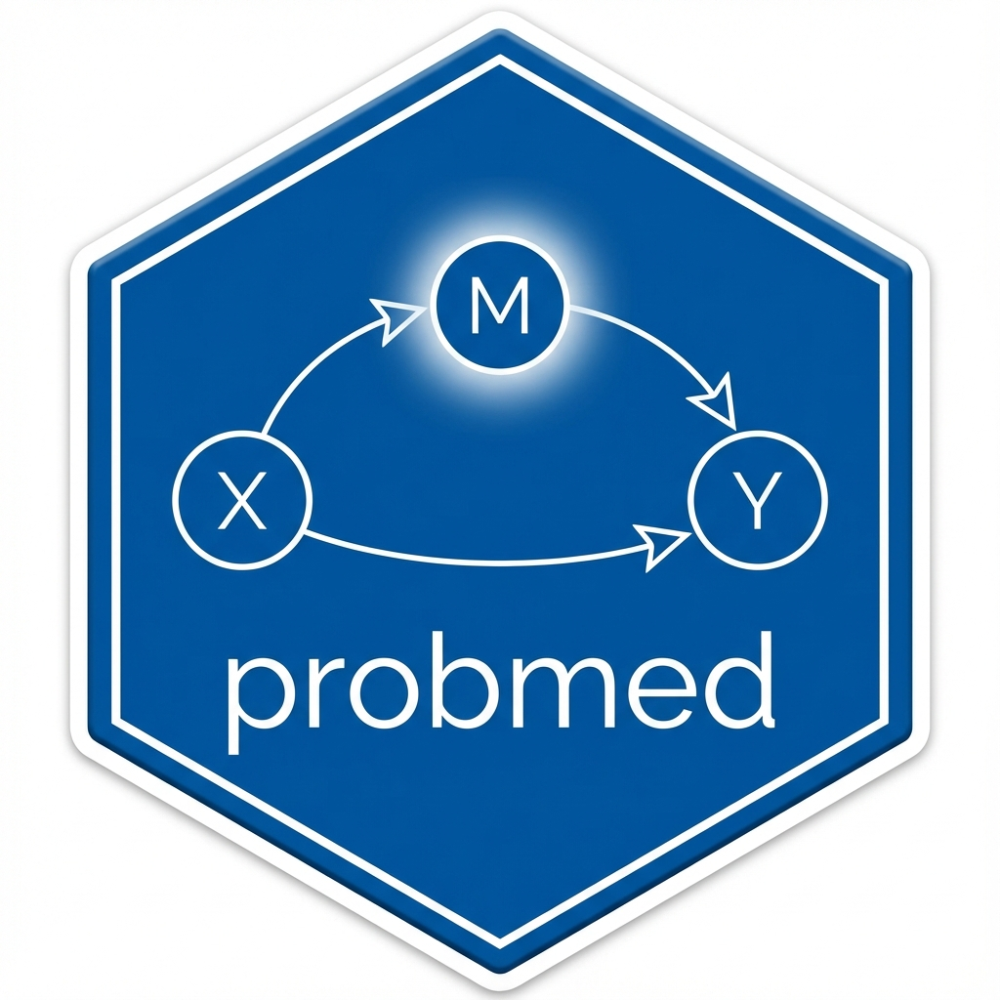

M–Y Confounding Sensitivity for a Proportion-Mediated Estimand
Source:R/sensitivity.R
pmed_sensitivity.RdA shared, minimal sensitivity helper for the P_med program (Papers 1–3).
All three estimands have the ratio form P_med = indirect / total. The
single shared point of failure is assumption A4 (no exposure-induced
mediator–outcome confounding): it biases the cross-world corner mean that
enters the indirect (numerator) component, leaving the total effect
(denominator), identified from observable corner means, robust. This function
propagates a stated numerator bias b to P_med, reporting
P_med(b) = (indirect + b) / total over a grid, the tipping bias that
zeroes the indirect effect, and (optionally) the bias that pushes P_med to
a user threshold. Gives each paper one honest sensitivity row.
Usage
pmed_sensitivity(
object = NULL,
indirect = NULL,
total = NULL,
bias_grid = NULL,
threshold = NA_real_,
evalue = FALSE,
se = NA_real_,
scale = NA_character_,
...
)Arguments
- object
A
P_med-family result (e.g. GaugePmedResult) or any object exposing indirect/total components. Ignored if bothindirectandtotalare supplied directly.- indirect, total
Numeric: supply the components directly instead of (or to override) extraction from
object.- bias_grid
Numeric: numerator biases
bto evaluate. Default spans+/- |indirect|on an 11-point grid.- threshold
Numeric or
NA: aP_medvalue whose tipping bias to report (e.g.0to ask "how much bias makes the share vanish"). DefaultNA(skip).- evalue
Logical: also compute an EValue E-value summary if the package is installed (default
FALSE).- se
Numeric or
NA: standard error ofindirect, used only for the E-value CI bound whenevalue = TRUE.- scale
Character: label for the
P_medscale (free text).- ...
Unused.
Value
A PmedSensitivity object.
Details
The bias model is an additive offset on the mean-based indirect component.
This is exact for the difference-scale (Paper 1) and incremental
(Paper 2) shares, whose numerators are differences of (cross-world) means.
For variance-share estimands (Paper 3, Sobol P_med^{sigma^2}) the numerator
is a variance component, not a mean; the additive-offset model is not
the right object there. Use this helper for mean-based shares; for Paper 3,
supply a pre-computed numerator perturbation if you have one, and prefer the
fuller Cinelli–Hazlett-style contour (planned) for a principled
variance-component bias map.
The optional E-value summary (evalue = TRUE) is a coarse RR-oriented
robustness number; it is reported only as a familiar single figure and is
guarded behind the EValue package (Suggests).
Examples
## From components (any paper):
pmed_sensitivity(indirect = 0.30, total = 0.50, threshold = 0)
#> P_med M-Y confounding sensitivity (A4)
#> P_med = 0.600 (indirect=0.300 / total=0.500)
#> Tipping bias (indirect -> 0): b = -0.300
#> Tipping bias (P_med -> 0.000): b = -0.300
#> P_med over bias grid [-0.300, 0.300]: [0.000, 1.200]
# \donttest{
## From a Paper 1 fit:
set.seed(1)
n <- 400; C <- rnorm(n)
A <- rbinom(n, 1, plogis(0.5 * C))
M <- 0.5 * A + 0.3 * C + rnorm(n)
Y <- 0.4 * A + 0.6 * M + 0.2 * C + rnorm(n)
fit <- ward_residual(data.frame(A, M, Y, C))
pmed_sensitivity(fit, threshold = 0)
#> P_med M-Y confounding sensitivity (A4)
#> P_med = 0.443 (indirect=0.281 / total=0.634)
#> Tipping bias (indirect -> 0): b = -0.281
#> Tipping bias (P_med -> 0.000): b = -0.281
#> P_med over bias grid [-0.281, 0.281]: [0.000, 0.886]
# }